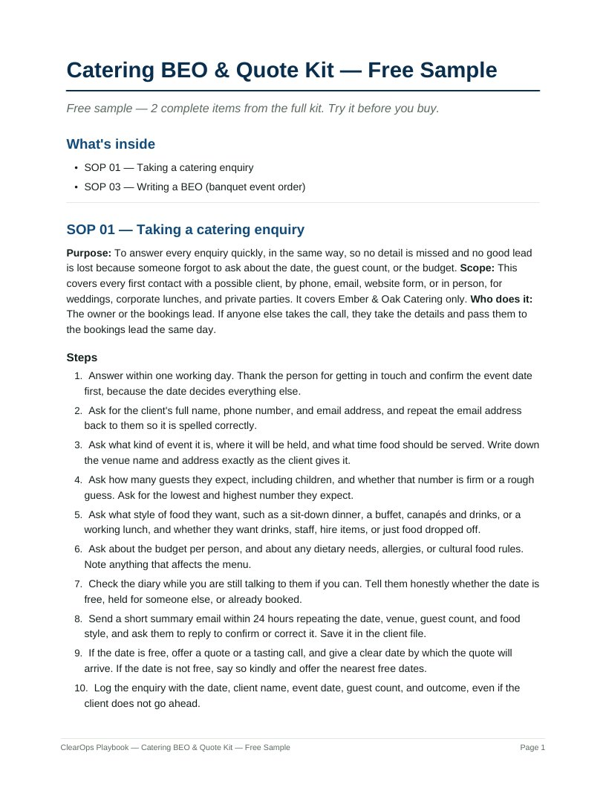

Catering
Catering BEO & Quote Kit
Ten ready-to-use procedures for a small caterer, written out in full — no blanks to fill in. From the first enquiry and a clear, honest quote to the BEO that runs the event, staffing, food safety, service, pack-down, and getting paid. Includes a complete worked wedding BEO for 80 guests, with timings, menu, staffing, equipment, and totals.

Running a small catering business means juggling enquiries, quotes, menus, staff, food safety, and payment, often all in the same week, and usually with a small team and no spare time to write procedures from scratch. The Catering BEO and Quote Kit gives you ten ready-to-use procedures written out in full for a small caterer, using the invented example business Ember and Oak Catering, a small caterer doing weddings, corporate lunches, and private parties. Every procedure follows the same clear shape, so your team always knows where to look: purpose, scope, who does it, numbered steps, a quality check, what to do if it goes wrong, and the records to keep.
There are no blanks to fill in and no vague advice, only concrete details you can follow on a real job, from the first phone call to the final invoice. The kit starts where every booking starts, with taking a catering enquiry and writing a clear, honest quote that shows every line, so the client can see exactly what they are paying for and you can see that the job will make money. It then shows you how to write a BEO, the banquet event order, the one document that tells the kitchen and the floor team exactly what happens at an event, and it includes a complete worked wedding BEO for 80 guests, with timings, menu, dietary needs, staffing, equipment, and totals that add up to 14,099 dollars.
From there it covers the menu tasting and final numbers, staffing an event, food safety, event setup and service, pack-down and close, invoicing and chasing payment, and handling dietary requirements and allergens. Each procedure is written in plain, simple English, with realistic numbers, times, and examples throughout, so a new team member can pick it up and run an event from it, and an experienced caterer can use it to stop things being missed when the diary is full. If you are a small caterer who wants bookings handled properly, quotes that protect your margin, and events that run smoothly from setup to pack-down, this kit gives you the paperwork to do it, ready to print, edit, and use on your next event.
Watch the video
A quick look at the catering kitchen this kit was written for.
What's inside
- SOP 01 — Taking a catering enquiry
- SOP 02 — Writing a quote
- SOP 03 — Writing a BEO (banquet event order), with a complete worked wedding BEO for 80 guests
- SOP 04 — Menu tasting and final numbers
- SOP 05 — Staffing an event
- SOP 06 — Food safety at an event
- SOP 07 — Event setup and service
- SOP 08 — Pack-down and close
- SOP 09 — Invoicing and chasing payment
- SOP 10 — Handling dietary requirements and allergens
- PDF, Word (.docx) and Markdown (.md) formats
- Event Tracker spreadsheet (.xlsx) — 9 tabs for the enquiry log, quotes, BEOs, tastings, staff rota, food safety, close-out, invoices and dietary list. Works in Excel and Google Sheets.
Try the free version
The free version has SOP 01 and SOP 03 (including the complete worked wedding BEO) in full from this exact pack, in PDF, Word and Markdown. No sign-up, no email.
The full pack
The full pack has all 10 procedures in PDF, Word and Markdown, plus the Event Tracker spreadsheet (.xlsx). The buy button takes you to the Etsy listing, where you can buy and download it right away. In the meantime, the free version above shows you exactly what the paid pack is like.
All sales of digital downloads are final. Please download the free version first and make sure this pack fits your business before you buy.